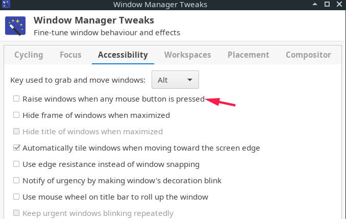

最近淘了一部二手x240,换了SSD和高分屏，装上manjaro 17 作为开发备用机，期间遇到了许多坑，在这边同一记录。
原先使用了KDE桌面，后面发现性能还是跟不上，换成了更轻量级的xfce，All is well~
制作U盘启动
下载 rufus 制作u盘启动
使用U盘安装，启动后显示“failed to load ldlinux.c32”
传统BIOS与UEFI启动的问题，在BIOS的启动选项里，将启动方式改为UEFI优先即可。
更换和添加源
sudo nano /etc/pacman.d/mirrors/China
manjaro 17 中 China 文件已经内置了中国的源，建议把清华的源镜像放在第一位
sudo nano /etc/pacman.d/mirrorlist
建议把清华的源镜像放在第一位，更新列表和系统的时候速度会快
sudo nano /etc/pacman-mirrors.conf
修改 OnlyCountry = China （注意把前面的注释 # 删掉）
保存退出 ### 添加archlinuxcn
sudo nano /etc/pacman.conf
添加
[archlinuxcn]
SigLevel = Optional TrustedOnly
Server= https://mirrors.tuna.tsinghua.edu.cn/archlinuxcn/$arch
#Server = https://mirrors.6.tuna.tsinghua.edu.cn/archlinuxcn/$arch
# only IPv6#Server = https://mirrors.4.tuna.tsinghua.edu.cn/archlinuxcn/$arch
# only IPv4#HTTP is also supported
sudo pacman -Syy 更新一下源列表，此处若出现错误，请按照终端提示，删除一个文件 （本机是类似于/var/lib*的一个db文件）
# 更新出现以下错误，只要把提示的文件删除即可
libglvnd: 文件系统中已存在 /usr/lib/libEGL.so.1
libglvnd: 文件系统中已存在 /usr/lib/libEGL.so.1.0.0
libglvnd: 文件系统中已存在 /usr/lib/libGL.so
libglvnd: 文件系统中已存在 /usr/lib/libGL.so.1
libglvnd: 文件系统中已存在 /usr/lib/libGLESv1_CM.so
libglvnd: 文件系统中已存在 /usr/lib/libGLESv1_CM.so.1
libglvnd: 文件系统中已存在 /usr/lib/libGLESv2.so
libglvnd: 文件系统中已存在 /usr/lib/libGLESv2.so.2
libglvnd: 文件系统中已存在 /usr/lib/libGLESv2.so.2.0.0
lib32-libglvnd: 文件系统中已存在 /usr/lib32/libEGL.so
lib32-libglvnd: 文件系统中已存在 /usr/lib32/libEGL.so.1
lib32-libglvnd: 文件系统中已存在 /usr/lib32/libEGL.so.1.0.0
lib32-libglvnd: 文件系统中已存在 /usr/lib32/libGL.so
lib32-libglvnd: 文件系统中已存在 /usr/lib32/libGL.so.1
lib32-libglvnd: 文件系统中已存在 /usr/lib32/libGLESv1_CM.so
lib32-libglvnd: 文件系统中已存在 /usr/lib32/libGLESv1_CM.so.1
lib32-libglvnd: 文件系统中已存在 /usr/lib32/libGLESv2.so
lib32-libglvnd: 文件系统中已存在 /usr/lib32/libGLESv2.so.2
lib32-libglvnd: 文件系统中已存在 /usr/lib32/libGLESv2.so.2.0.0
重新执行 sudo pacman -Syy 就没有问题了
sudo pacman -S archlinuxcn-keyring` 此步很关键，是安装archlinuxcn的GPG keys 滚动升级一下系统和软件(不建议频繁滚动升级，稳定为主)
sudo pacman -Syyu
开始更新系统了
安装 vi
pacman -Syy vi
安装 aur客户端
yaourt安装与使用 用yaourt装东西，每次sudo yaourt -S xxx 最后出现
错误： 不能使用 root 用户运行 makepkg，
因为可能会系统造成灾难性的损坏。
无法读取 PKGBUILD
原因： 不能用 sudo 运行 yaourt ,换句话说必须在普通用户下运行 yaourt yaourt 停止维护了，可以改用yay sudo pacman -Syy yay
让终端走代理
安装并运行 privoxy 或者 polipo, 把本地ss代理转换成http代理，然后把终端代理设置到http代理上：
export https_proxy=http://localhost:8123
export http_proxy=http://localhost:8123
终端打开的程序就会走代理了。
安装 搜狗输入法
sudo pacman -S fcitx-sogoupinyin
sudo pacman -S fcitx-im # 全部安装
sudo pacman -S fcitx-configtool # 图形化配置工具
之后就是还需要更改 ~/.xprofile
export GTK_IM_MODULE=fcitx
export QT_IM_MODULE=fcitx
export XMODIFIERS="@im=fcitx"
最后在命令行输入fcitx就可以使用了
安装日语输入法
yay -Syy fcitx-anthy
dock 软件
aur docky
高分屏像素缩放
系统设置-字体-固定字体dpi 110, 不使用缩放，很多软件在开启缩放后会模糊或其他问题。固定字体的dpi就可以达到缩放效果了。
合上盖子，按电源键挂起没有效果
经过测试，发现按电源键没产生 acpi 事件，因此不能触发电源管理，此暂不能解决。曲线救国：用fn+f9作为快捷键挂起计算机。
指纹模块
参考： https://wiki.archlinux.org/index.php/Fingerprint-gui 配置完成后su和sudo要求输入密码时，就可以用刷指纹了。 ### 运行fingerprint-gui时出现 could not open fingerprint device permission problem 是因为普通用户没有指纹设备的读写权限。 lsusb 找到指纹模块的 Bus号和Device号，比如：
Bus 002 Device 002: ID 138a:0017 Validity Sensors, Inc. Fingerprint Reader
然后赋予/dev/bus/usb/xxx/yyy 777权限 xxx表示Bus号，yyy表示Device号，上面的例子就是 /dev/bus/usb/002/002 http://home.ullrich-online.cc/fingerprint/Forum/topic.php?TopicId=20
KDE 登录界面无法使用指纹识别登录
fingerprint与kde的kdm不兼容，暂时无解。
IDEA 某些菜单乱码
http://www.cnblogs.com/lemonbar/p/3924305.html
触摸板
触摸板优化只在 KDE 环境下配置成功过，xfce下不行。
鼠标点击模拟” 下面的选项是无效
触摸板设置中，“鼠标点击模拟” 下面的选项是灰色的，导致触摸板双指点击作为右键的功能不能用。
解决方案 ： pacman 安装驱动 重启即可 触摸板驱动：xf86-input-libinput
官方从17年1月开始换成 libinput驱动，xf86-input-synaptics进入低维护状态，尽量不用
具体参考 https://wiki.archlinux.org/index.php/Lenovo_ThinkPad_X240#Touchpad touchpad 一节
触摸板鼠标手势 安装 libinput-gestures
参考 http://www.cnblogs.com/xiaozhang9/p/6157934.html
自定义配置文件（x240 最多支持3点触控） ~/.config/libinput-gestures.conf
gesture swipe left 4 xdotool key super+Left # 4指左划: 切换到左侧工作区
gesture swipe right 4 xdotool key super+Right # 4指右划: 切换到右侧工作区
gesture swipe left 3 xdotool key alt+Left # 3指左划: 网页后退
gesture swipe right 3 xdotool key alt+Right # 3指右划: 网页前进
gesture swipe up 3 xdotool key super+w # 3指上划: 显示当前桌面所有窗口
gesture swipe down 3 xdotool key super+d # 3指下划: 显示桌面
gesture pinch in 2 xdotool key ctrl+minus # 2指捏: 缩小
gesture pinch out 2 xdotool key ctrl+plus # 2指张: 放大
保存配置文件 然后启动 libinput-gestures-setup start 也可以重启 libinput-gestures-setup restart 加入开机启动 libinput-gestures-setup autostart
取消自动锁屏（KDE）
系统设置–桌面行为–锁屏 中设置
没有ifconfig命令
安装net-tool
pacman -S net-tools dnsutils inetutils iproute2
##共享鼠标键盘软件 synergy 下载地址 http://www.afzaalace.com/synergy-stable-builds/
arch 可以直接用pacman下载
Synergy分为服务端和客户端，用户使用鼠标键盘的那一台机子是服务端，其他的是客户端 Arch下的服务端配置 /etc/synergy.conf
# screens 指的是操作的电脑的名字，
section: screens
caixx-pc:
Eternity-Home:
end
# 配置各电脑之间的相对位置
section: links
caixx-pc:
left = Eternity-Home
Eternity-Home:
right = caixx-pc
end
# 电脑别名
section: aliases
caixx-pc:
192.168.1.103
Eternity-Home:
192.168.1.105
end
配置完后运行服务端 synergys -f
运行客户端 synergyc -f 服务端ip地址
xfce 桌面相关
主题： aur paper-gtk-theme-git
aur paper-icon-theme-git aur paper-icon-theme
ctrl键交换 修改 ~/.profile 增加 /usr/bin/setxkbmap -option “ctrl:swapcaps”
一些快捷键命令：
睡眠 xfce4-session-logout –suspend
休眠 xfce4-session-logout –hibernate
弹出开始菜单 xfce4-popup-whiskermenu
锁屏 xflock4
哪里设置快捷键？ 全局快捷键： setting –> keyboard –> Application shortcuts 窗口相关快捷键：setting –> windows manager
打开docky有，屏幕中间有一条线： image.png-276.2kB 设置-窗口管理器微调-合成器-去掉勾选“在dock窗口下显示阴影”
锁定屏幕后一段时间再用电脑，出现黑屏，只看到鼠标： 关闭屏保试试: 在设置种的 电源管理器 里关闭所有会关闭屏幕的选项 aur light-locker-settings 在设置里关闭 light-locker
滚动背景窗口时，不改变窗口焦点
Settings —> Window Manager Tweaks —> Accessibility 取消‘raise windows when any mouse button is pressed’ 选项

Arch 上维护的常用程序列表 wiki
常用的程序都可以在上面找到： https://wiki.archlinux.org/index.php/List_of_applications_(%E7%AE%80%E4%BD%93%E4%B8%AD%E6%96%87))